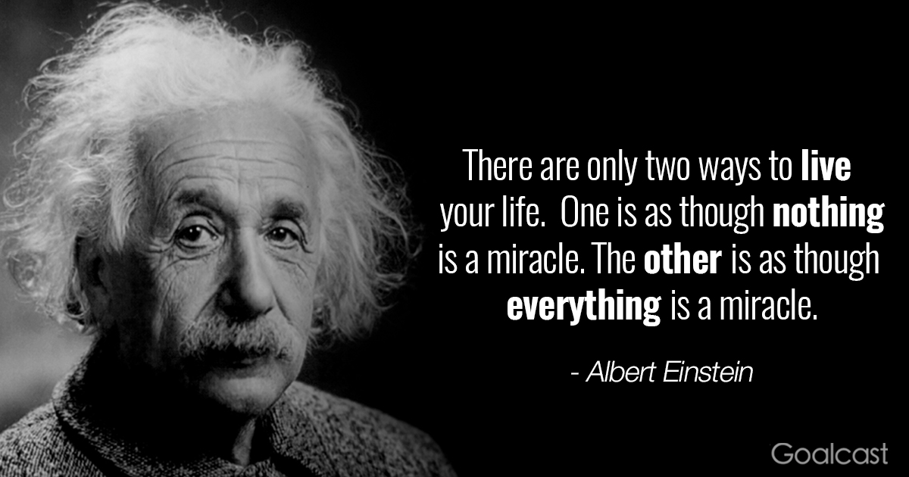

Albert Einstein
@AlbertEinstein
@AlbertEinstein
Official Twitter account of the World's Favorite Genius.
Albert Einstein @AlbertEinstein - 4 minutes ago
Check out my biography written by Walter Isaacson: http://t.co/bio
Albert Einstein @AlbertEinstein - 5 hours ago
Try not to become a man of success, but rather try to become a man of value.
Albert Einstein @AlbertEinstein - 2 days ago

Albert Einstein @AlbertEinstein - 2 days ago
A person who has never made a mistake never tried anything new.